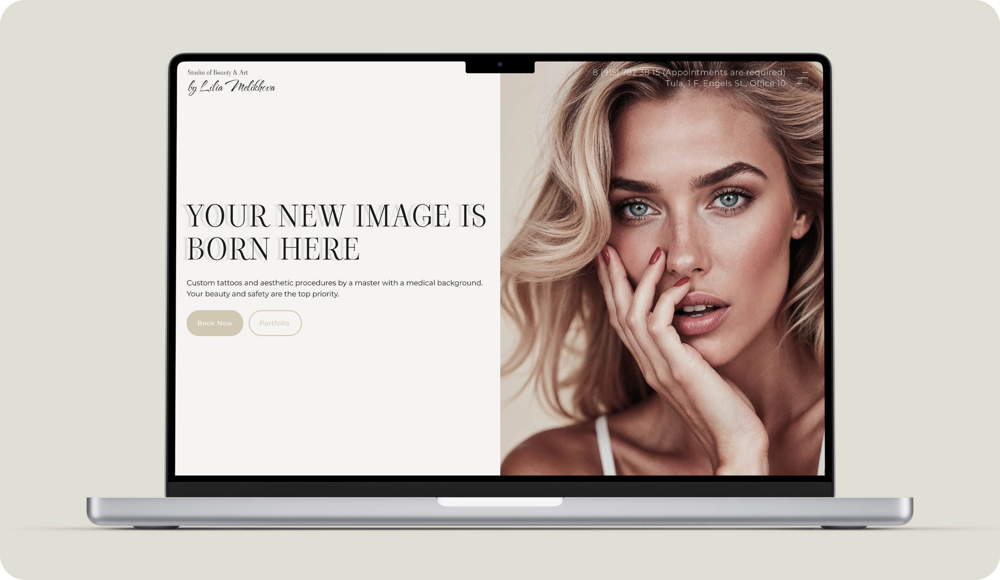
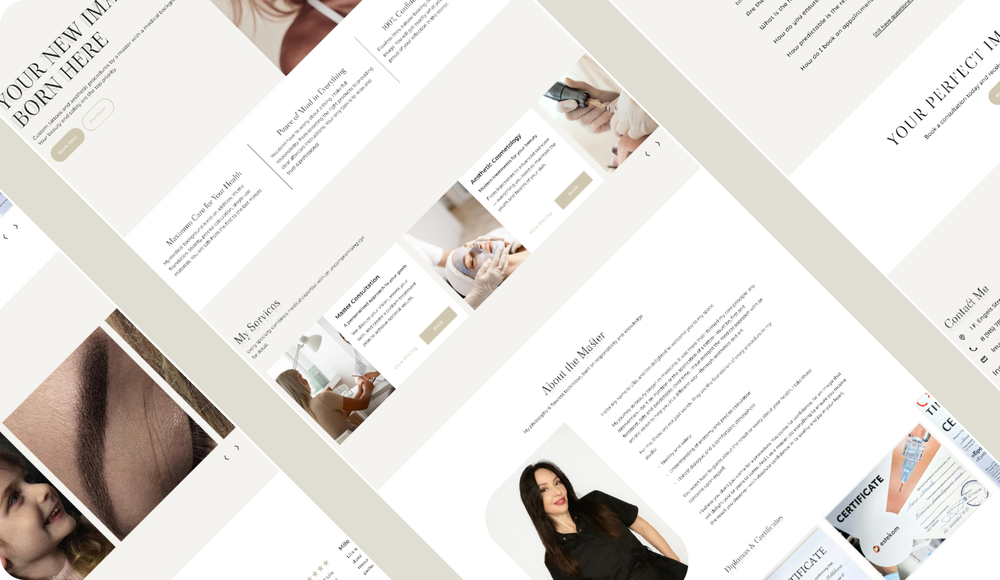

LM Studio — Conversion-focused landing for a medical beauty brand
High-conversion landing page for a medical-grade beauty studio
The project was created for a beauty studio led by a master with a medical background, where safety, sterility and predictable results are core values. The studio relied on social media and word of mouth but needed a structured website to clearly communicate expertise, build trust and convert visitors into bookings.
Problem
Potential clients:
- did not clearly understand the difference between aesthetic services and medical-grade procedures,
- lacked confidence in safety and professionalism,
- hesitated to book due to unclear structure and scattered information.
Without a focused landing page, trust and conversion were lost early.
Goal
Design a landing page that:
- clearly communicates medical credibility and responsibility,
- builds trust from the first screen,
- guides users toward booking a consultation.
The focus was conversion and reassurance, not brand storytelling or experimentation.
Solution
I designed a clear, trust-driven landing page with a strong conversion flow:
- Authority-first hero section. Emphasizing medical background and safety.
- Clear service structure. Explaining what is offered and for whom.
- Trust blocks. Highlighting sterility, responsibility and predictable results.
- Social proof and portfolio. To reduce hesitation.
- Focused CTAs. Leading directly to booking.
Each section was designed to answer user doubts before they arise.


Outcome
- A ready-to-launch landing page optimized for social and referral traffic.
- Clear positioning combining medical responsibility with aesthetic expertise.
- A structure that supports confident booking decisions.